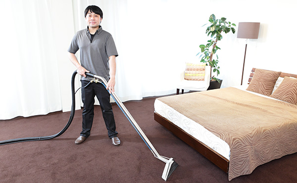

敷いたままでも
カラーチェンジが自由自在

「日焼けで退色した」「シミが目立つ」「張替えたいけど費用が高くつく」など、カーペットに関する悩みは意外と多いもの。また、部屋（壁紙など）と 色合いがマッチしていないと、美観の面でも気になるところ！ そんなカーペットは再染色でリニューアル。部分的でも全体でも、クリーニング感覚で敷いたま まリフレッシュできます。
敷いたままでも
カラーチェンジが自由自在
「日焼けで退色した」「シミが目立つ」「張替えたいけど費用が高くつく」など、カーペットに関する悩みは意外と多いもの。また、部屋（壁紙など）と 色合いがマッチしていないと、美観の面でも気になるところ！ そんなカーペットは再染色でリニューアル。部分的でも全体でも、クリーニング感覚で敷いたま まリフレッシュできます。


| 数量・サイズ | 価格 |
|---|---|
| 20㎡未満 | 40,000円 |
| ～40㎡ | 1,900円/㎡ |
| ～80㎡ | 1,800円/㎡ |
| ～100㎡ | 1,700円/㎡ |
| 100㎡以上 | 1,600円/㎡ |
※家具の移動などがある場合は、別途経費を頂くことがございます